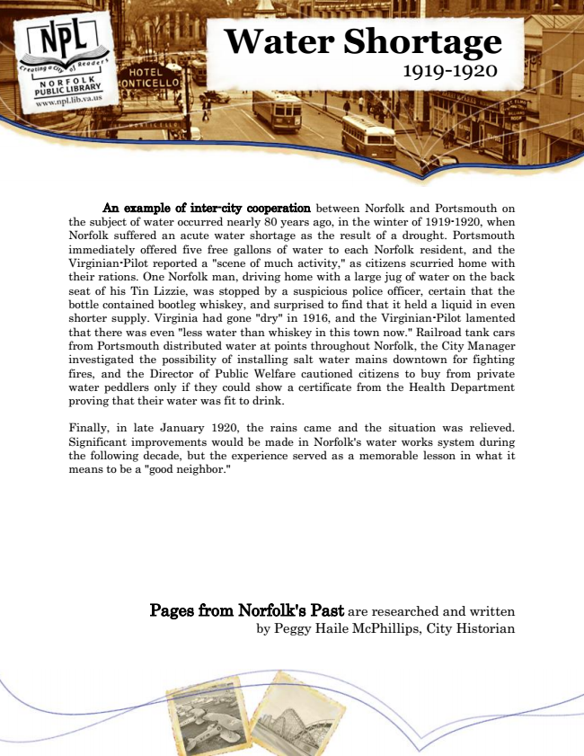

Water Shortage 1919-1920
An example of inter-city cooperation between Norfolk and Portsmouth on the subject of water occurred nearly 80 years ago, in the winter of 1919-1920, when Norfolk suffered an acute water shortage as the result of a drought. Portsmouth immediately offered five free gallons of water to each Norfolk resident, and the Virginian-Pilot reported a "scene of much activity," as citizens scurried home with their rations. One Norfolk man, driving home with a large jug of water on the back seat of his Tin Lizzie, was stopped by a suspicious police officer, certain that the bottle contained bootleg whiskey, and surprised to find that it held a liquid in even shorter supply. Virginia had gone "dry" in 1916, and the Virginian-Pilot lamented that there was even "less water than whiskey in this town now." Railroad tank cars from Portsmouth distributed water at points throughout Norfolk, the City Manager investigated the possibility of installing salt water mains downtown for fighting fires, and the Director of Public Welfare cautioned citizens to buy from private water peddlers only if they could show a certificate from the Health Department proving that their water was fit to drink.
Finally, in late January 1920, the rains came and the situation was relieved. Significant improvements would be made in Norfolk's water works system during the following decade, but the experience served as a memorable lesson in what it means to be a "good neighbor."
Pages from Norfolk's Past are researched and written by Peggy Haile McPhillips, City Historian